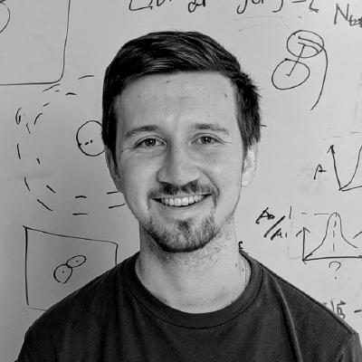

I'm a computational biophysicist working at the intersection of protein physics, soft matter, and tissue mechanics. Currently a postdoc at Syracuse University with Lisa Manning and Alessandro Mongera, I develop simulations and theory that connect molecular-scale packing to tissue-scale mechanics. My PhD work at Yale (with Corey O'Hern) established that protein fold quality can be predicted from a binary burial signal at far fewer bits than expected — reviving fundamental physical questions in the post-AlphaFold era. I'm currently on the academic job market seeking faculty positions in biophysics and soft matter.
Protein cores all pack to the same density (φ ≈ 0.55), but there has been no physical explanation for why. We show this value marks the onset of a jamming transition: as hydrophobic interactions drive collapse, the core undergoes a floppy-to-rigid transition with the same power-law scaling hallmarks seen in jammed particulate systems. To demonstrate this, I built a new all-atom protein model from scratch — using only hard-core repulsion, bond geometry, and weak hydrophobic attraction — that achieves near-zero Ramachandran and side-chain dihedral outliers without explicit dihedral restraints, staying within ~1 Å RMSD of crystal structures at jamming onset and refolding from partially unfolded states. The model shows that the stereochemical constraints of real amino acids shift jamming onset from φ ≈ 0.63 (simple polymers) down to exactly the φ ≈ 0.55 observed in nature.
Embryonic mesenchymal tissues are porous, under tension, and flow like a fluid — a combination that naively should be unstable. We developed a new particle-based interaction model with hysteretic sticking and stochastic bond kinetics to show that contact inhibition of locomotion (CIL) resolves this paradox, directing cell activity away from neighbors to prevent clustering. Mean-field continuum equations connect cell-scale parameters directly to emergent diffusivity, tension, and structural texture, collapsing simulation data across eight orders of magnitude and matching quantitative measurements in the avian presomitic mesoderm.